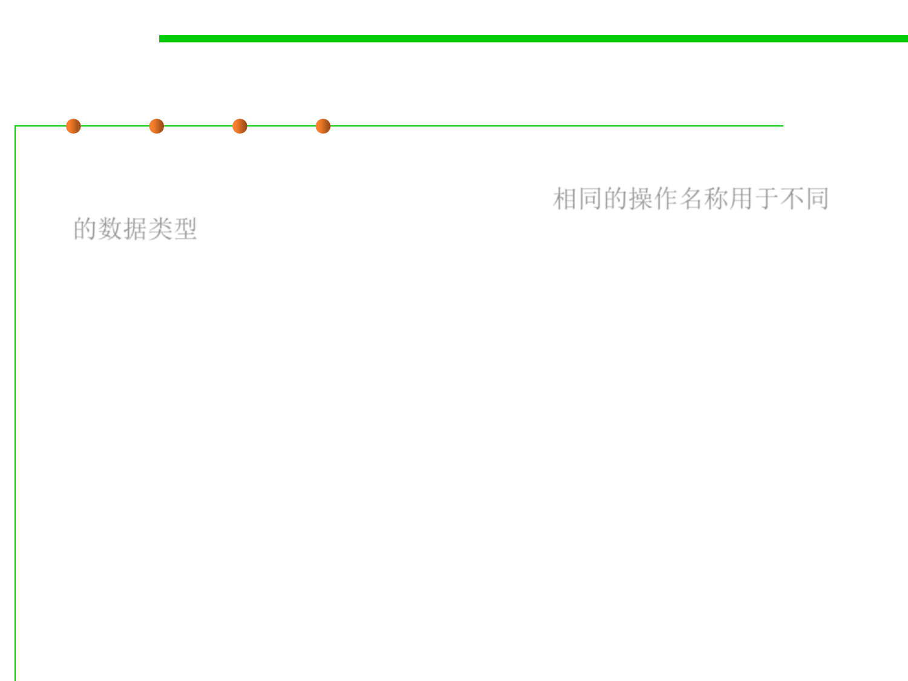

3.1 Data Type and Type Checking
Overloading operators/operations 重载运算符和操作
▪ Some operations are overloaded in the sense that the same
operation name is used for different types. 相同的操作名称用于不同
的数据类型
▪ The arithmetic operators +, -, *, / are heavily overloaded for
the numeric primitive types in Java.
▪ Methods can also be overloaded. Most programming languages
have some degree of overloading.
▪ (to be discussed in Section 3.3 OOP)